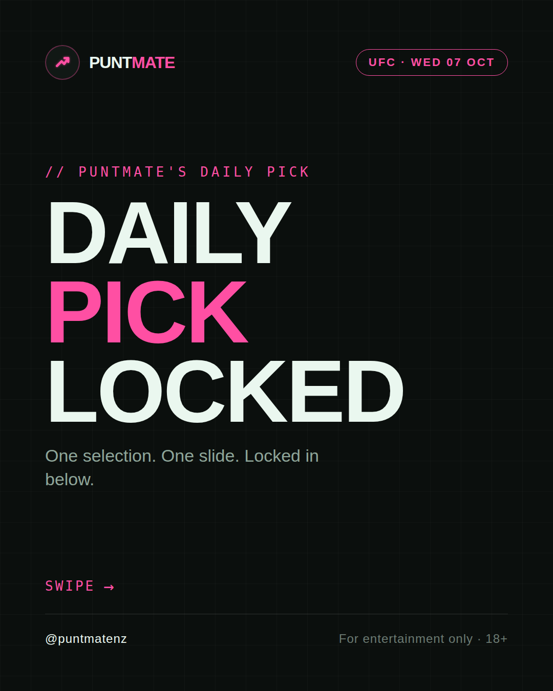
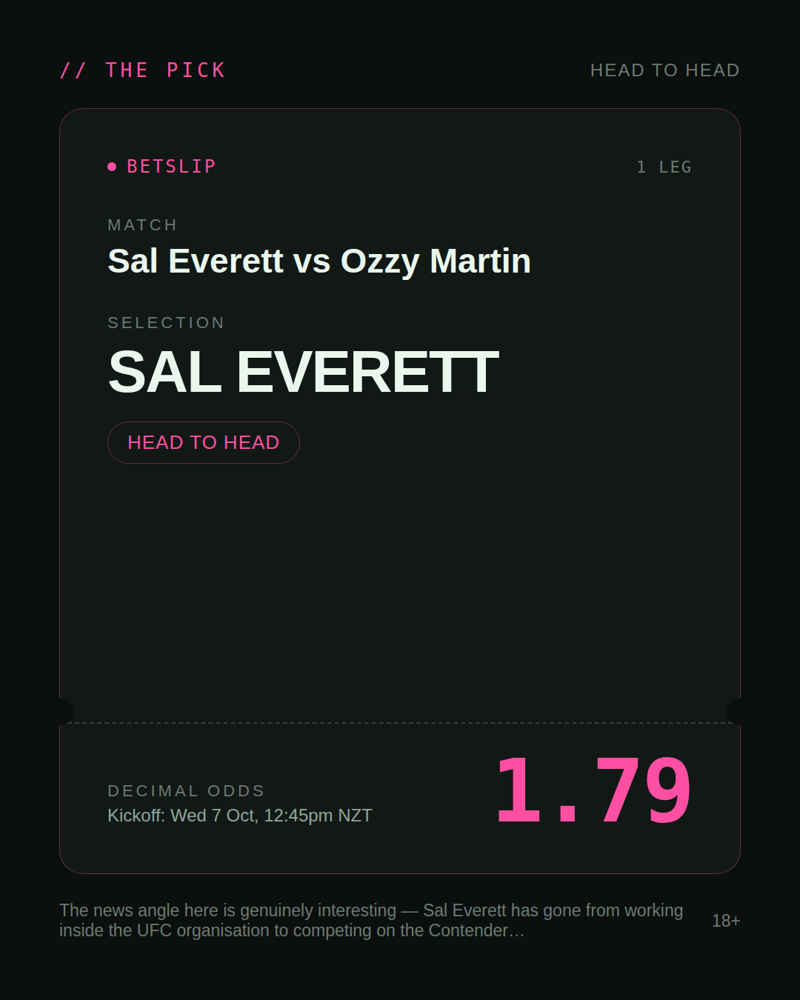
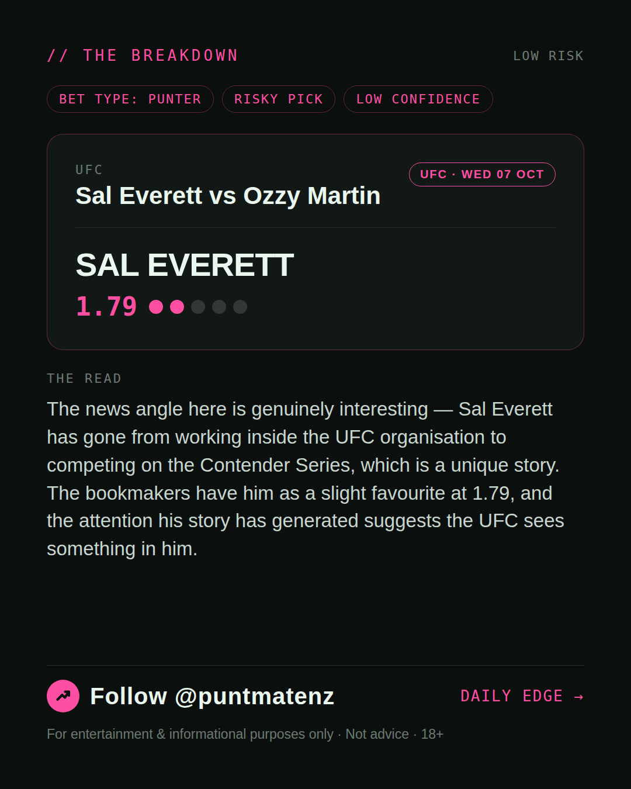
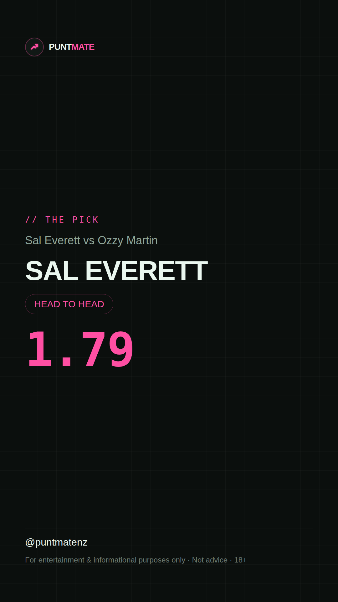

*🎯 PUNTMATE NZ — UFC* 🏟 Sal Everett vs Ozzy Martin *PICK:* SAL EVERETT *ODDS:* 1.79 (Head to Head) *BET TYPE: PUNTER* _The news angle here is genuinely interesting — Sal Everett has gone from working inside the UFC organisation to competing on the Contender Series, which is a unique story. The bookmakers have him as a slight favourite at 1.79, and the attention his story has generated suggests the UFC sees something in him._ ────────────────── 📲 Join Telegram for daily picks ⚠️ For entertainment & informational purposes only. Not advice. 18+.
🎯 UFC — Sal Everett vs Ozzy Martin SAL EVERETT @ 1.79 (Head to Head) BET TYPE: PUNTER Solid touch here. Not a lock, but the value's real and the form backs it up. The news angle here is genuinely interesting — Sal Everett has gone from working inside the UFC organisation to competing on the Contender Series, which is a unique story. The bookmakers have him as a slight favourite at 1.79, and the attention his story has generated suggests the UFC sees something in him. Follow for daily value picks → @puntmatenz ⚠️ For entertainment & informational purposes only. Not advice. 18+. #PuntmateNZ #SportsBetting #NZTAB #UFC
| has_pick | True |
| pick_id | 2026-10-06_Sal_Everett_vs_Ozzy_Martin |
| run_id | 37547922751 |
| generated_at | 2026-10-06T23:45:09.856938+00:00 |
| post_date | 2026-10-06 |
| match | Sal Everett vs Ozzy Martin |
| sport | mma_mixed_martial_arts |
| sport_label | UFC |
| market | Head to Head |
| selection | SAL EVERETT |
| odds | 1.79 |
| bet_type | PUNTER_BET |
| bet_type_label | BET TYPE: PUNTER |
| bet_type_reason | Solid touch here. Not a lock, but the value's real and the form backs it up. The news angle here is genuinely interesting — Sal Everett has gone from working inside the UFC organisation to competing on the Contender Series, which is a unique story. The bookmakers have him as a slight favourite at 1.79, and the attention his story has generated suggests the UFC sees something in him. |
| classification | RISKY_PICK |
| risk | RISKY_PICK |
| confidence | LOW |
| confidence_label | LOW |
| final_explanation | The news angle here is genuinely interesting — Sal Everett has gone from working inside the UFC organisation to competing on the Contender Series, which is a unique story. The bookmakers have him as a slight favourite at 1.79, and the attention his story has generated suggests the UFC sees something in him. |
| public_caution | Keep this one light — the value's there but so is the uncertainty. |
| theme | night |
| carousel_paths | ['data/review/2026-10-06_Sal_Everett_vs_Ozzy_Martin/cover.png', 'data/review/2026-10-06_Sal_Everett_vs_Ozzy_Martin/tip.png', 'data/review/2026-10-06_Sal_Everett_vs_Ozzy_Martin/breakdown.png'] |
| carousel_urls | ['https://raw.githubusercontent.com/kingofthecastle24/puntmate/main/data/cards/2026-10-06_Sal_Everett_vs_Ozzy_Martin_night_1_cover.png', 'https://raw.githubusercontent.com/kingofthecastle24/puntmate/main/data/cards/2026-10-06_Sal_Everett_vs_Ozzy_Martin_night_2_tip.png', 'https://raw.githubusercontent.com/kingofthecastle24/puntmate/main/data/cards/2026-10-06_Sal_Everett_vs_Ozzy_Martin_night_3_breakdown.png'] |
| story_path | data/review/2026-10-06_Sal_Everett_vs_Ozzy_Martin/story.png |
| story_url | https://raw.githubusercontent.com/kingofthecastle24/puntmate/main/data/cards/2026-10-06_Sal_Everett_vs_Ozzy_Martin_night_story.png |
| intended_platforms | ['telegram', 'instagram_feed', 'instagram_story', 'facebook'] |
| workflow_state | GENERATED |
| has_punter_multi | False |
| has_gambler_multi | False |
| has_degenerate_multi | False |